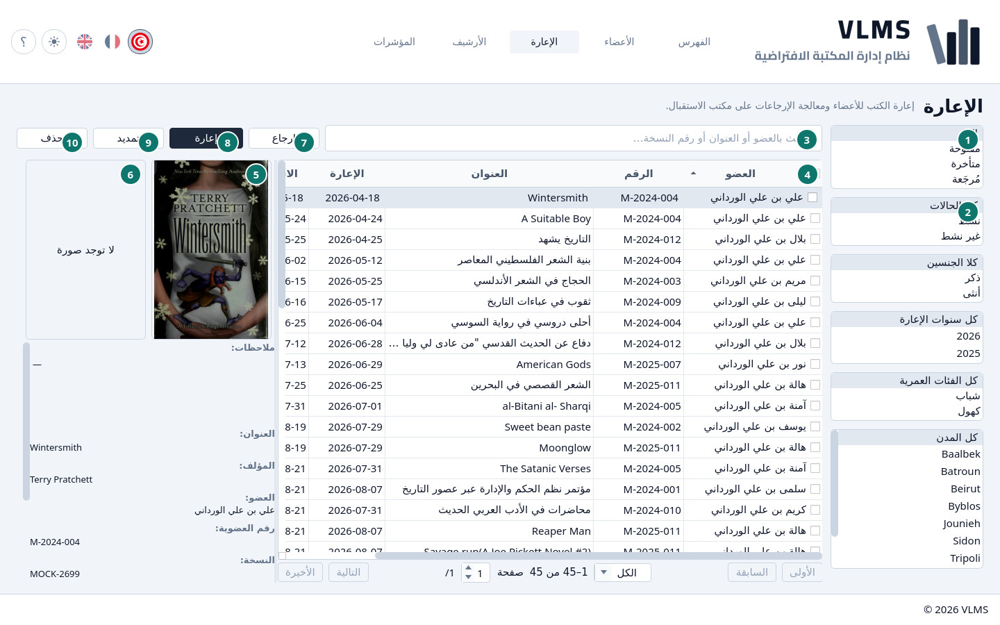
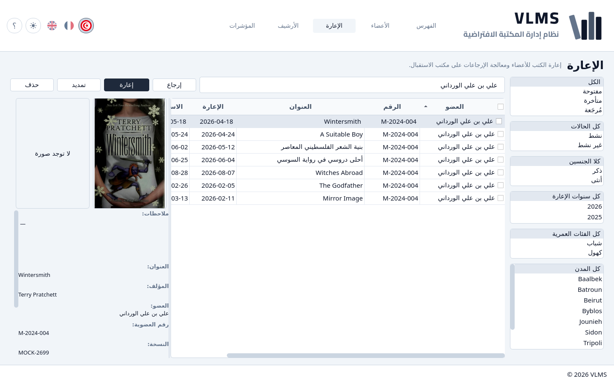

الإعارة
ما هو خارج، وما تأخر، وما رجع.
الإعارة قائمة الإعارات التي ما زالت في الخدمة. الإعارة المفتوحة أو المتأخرة تعني أن النسخة ليست على الرف. الإعارة المُرجَعة تعني أنها عادت.


- مرشّح الحالة.
- مرشّحات العضو.
- البحث.
- القائمة.
- غلاف العنوان المُعار، أو الصورة البديلة إن لم يكن له غلاف.
- صورة العضو، أو لا توجد صورة.
- إرجاع
- إعارة
- تمديد
- حذف
تفاصيل الإعارة المظلّلة تحت الصورتين: العضو والنسخة والتواريخ.
المرشّح
المرشّح اختيار واحد. يفتح على الكل.
- مفتوحة — خارجة، والاستحقاق اليوم أو بعده.
- متأخرة — خارجة، ويوم الاستحقاق مضى.
- مُرجَعة — عادت إلى الرف.

مفتوحة لا تشمل متأخرة. انظر حالات الإعارة.
مرشّحات العضو
تحت مرشّح الحالة قوائم الأعضاء: الحالة والجنس والفئة العمرية والمدينة تُبقي الإعارات التي يطابقها عضوها. قائمة السنوات، التي تبدأ بـكل سنوات الإعارة، هي سنة الإعارة لا سنة تسجيل العضو. تجتمع مع مرشّح الحالة وفيما بينها، فـمتأخرة مع شباب تعرض الإعارات المتأخرة للأعضاء الشباب.
البحث
البحث يتبع العنوان ورقم العضوية والاسم الكامل. الاسم واللقب معاً يجدان العضو.


الأزرار
إعارة تخرج نسخة. تمديد وإرجاع يتبعان الإعارة المظلّلة ولا يتاحان إلا ما دامت تلك الإعارة خارجة. حذف يؤرشف إعارة مُرجَعة. الخطوات هي إعارة كتاب والإرجاع والتمديد والإزالة.